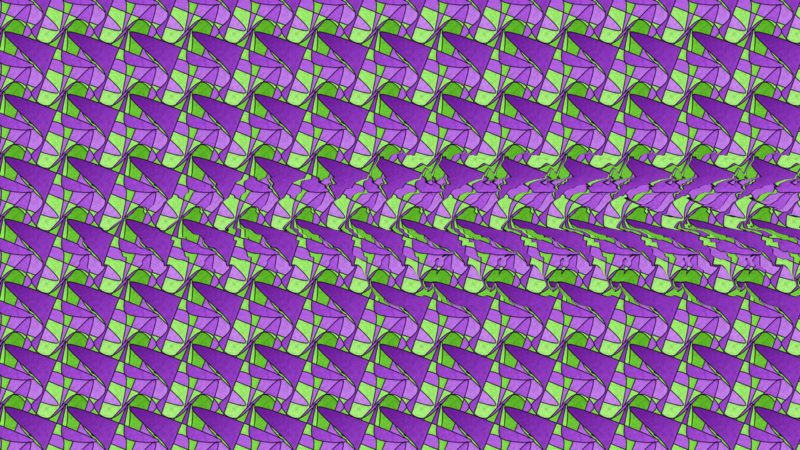

Two films and an instrument made from one tessellation. Its tile is a twisted ribbon in four rotations, and here it becomes a flock of paper swifts, a hidden gull, and a voice. Best viewed on a desktop browser, with sound.

Tip: click the tile organ once to give it keyboard focus and start its sound. Browsers only allow audio after a click.
Everything starts from one SVG: a single tile in four 90° rotations on a square lattice tilted 22°. The tile's outline crosses itself, so neighbouring tiles overlap and the drawing order decides what you see. Traced as a waveform, the outline has only odd harmonics, like a clarinet.
Both films are rendered by Python scripts (NumPy, Cairo, ffmpeg), with no samples and no AI image generation. Each was rendered twice, in a Claude cloud container and entirely in GitHub Actions. The stereogram, the depth map and both soundtracks came out byte-identical.
| Render | Cloud container | GitHub Actions |
|---|---|---|
| Flock | 2 min 51 s | 3 min 47 s |
| Painter's Order | 6 min 24 s | 4 min 34 s |